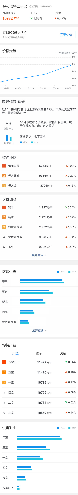

<ion-view view-title="甘肃省行情报告" class="nav-title">
	<ion-nav-bar>
		<ion-nav-buttons side="left">
			<button class="button button-icon" ng-click="goback()">
				<i class="ion-ios-arrow-left nav-title" style="font-size: 30px;"></i>
			</button>
		</ion-nav-buttons>
	</ion-nav-bar>
	<ion-content style="background-color: #fff;">
		
	</ion-content>
</ion-view>